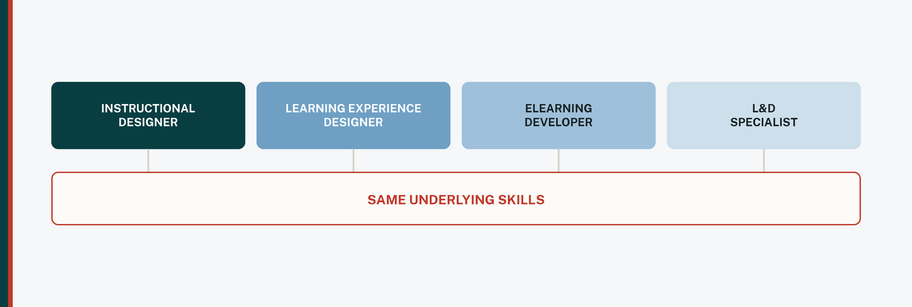

The learning design field has a title problem
Instructional designer. Learning experience designer. eLearning developer. Learning and development specialist. Curriculum designer. Learning solutions consultant.
If you have spent any time looking at roles in this field, you have probably assumed those titles map to meaningfully different jobs, and that not knowing the difference is a gap in your understanding. It usually isn't. The field itself hasn't settled on what these words mean. As one widely read explainer in the space puts it, people use the same title to mean different things and different titles to mean the same thing.
That isn't a small annoyance. It changes how you should read a posting.
What the titles tend to mean, when they mean anything
There are real distinctions underneath the noise. They're just applied inconsistently.
Instructional designer
The learning strategist. Needs analysis, measurable objectives, instructional sequencing, working with subject matter experts, storyboarding.
eLearning developer
The builder. Takes the storyboard and produces the course in an authoring tool, handling interactions, media, and functionality.
Learning experience designer
Often used interchangeably with instructional designer. Where it means something distinct, the emphasis leans toward the learner's experience rather than the content itself.
Learning and development
Usually the umbrella, not a specific craft. Often corporate, often broader, and often includes training delivery, facilitation, and program ownership.
The cleanest of these distinctions is between design and development. Design decides what the course should do and how it should be structured. Development builds the thing. In principle the developer's work starts where the designer's ends.
In practice, that line holds mostly at organizations large enough to staff both. Most corporate instructional design roles expect the designer to handle traditional design work and the eLearning development, and sometimes analysis and evaluation on top. eLearning developer roles are more likely to be scoped to development alone. So the same title, instructional designer, can describe a strategist at one company and a one-person production team at another.
The title tells you what a team calls the role. The responsibilities tell you what you would actually do.
What this means practically
Two things follow, and they pull in opposite directions, which is why the advice usually gets flattened into something less useful.
Widen the titles you look at. If you only ever search one phrase, you are filtering out roles that would have fit, purely because a different team labeled the same work differently. The list at the top of this post is not exhaustive, and adjacent phrasing (learning content designer, training designer, digital learning designer) shows up constantly.
Then narrow on the responsibilities. A wide net is only useful if you read what lands in it. A posting titled eLearning developer that wants three years of Storyline and Articulate Rise output is not going to be a fit for someone who has never opened either, no matter how much the word "learning" appeals. That is not a reason to be discouraged. It is a reason to read the bullet points before the title, and to spend your energy on the postings where the described work actually matches what you can do or can credibly learn quickly.
The distinction matters most for people coming from teaching. Classroom experience maps strongly onto the design side: objectives, sequencing, assessment, working with content experts. It maps less directly onto the development side, which is a tools and production skill set. Both are learnable, but they are not the same learning curve, and a posting's responsibilities section is the only reliable way to tell which one a given role is asking for.
Why the inconsistency exists at all
Mostly organizational maturity and size. A university with a dedicated design team, a media team, and an LMS administrator can afford precise titles because the work is genuinely divided. A twelve-person company hiring its first learning person needs someone who can do all of it, and whatever they call that role will be an approximation.
Neither is wrong. But it means the title is a description of the team's structure at least as much as it is a description of the job. Read it as a clue, not a specification.
← All posts